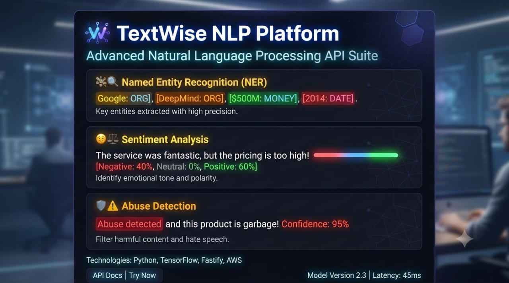

2026
NLP Web Service
A web service where anyone can run text analysis in one place. It brings Named Entity Recognition (NER), sentiment analysis and abuse detection together, using external APIs behind the scenes, so the user never has to create an API key of their own.
What it does
- NER: finds names, places and organisations in text.
- Sentiment analysis: tells whether the text feels positive, negative or neutral.
- Abuse detection: flags abusive language.
- User register and login.
- Every user’s history is stored, so they can look at past analyses.
- No API key needed: paste text and get the result directly.
2026
IPL API Web Service
A set of 11 APIs built on an IPL dataset, covering things like comparisons and records, so anyone can analyse cricket data through simple API calls. The APIs are wrapped in a website where users sign up and get their own key.
What it does
- 11 APIs on the IPL dataset (for example comparisons and records).
- A website with user register and login.
- Each user can generate their own API key.
- With the key, users call the APIs and analyse cricket data.
2026
Startup Funding Analysis
A Streamlit website that analyses a startup funding dataset. It has two views, one for investors and one for startups, and users can register and log in.
What it does
- Investor analysis: explore funding data from the investor’s side.
- Startup analysis: explore funding data from the startup’s side.
- User register and login.
2026
COVID-19 Dashboard
A simple dashboard built with Dash that analyses the COVID-19 dataset through graphs and pie charts.
What it does
- Shows COVID-19 trends in graphs.
- Shows breakdowns in pie charts.
- Built with Dash, in a clean and simple layout.
2026
Flipkart Web Scraping
After learning web scraping, I collected product data from the Flipkart website and built a dataset from it. It was my first project in data gathering.
What it does
- Scrapes product data from the Flipkart website.
- Organises the scraped data into a dataset.
- The dataset is ready for cleaning and analysis.